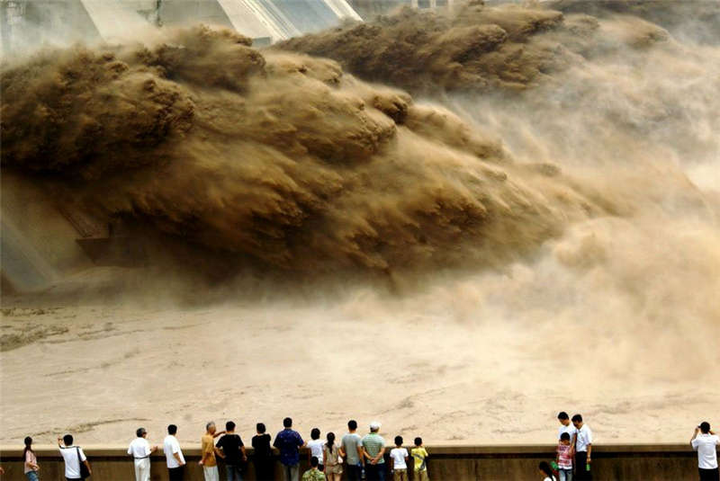

-
王屋山
王屋山，被誉为天下第一洞山，世界地质公园，愚公移山故事发生的地方，同时也是中国道教名山，中国古代九大名山之一，主峰天坛山...
详情... -
黄河三峡
黄河三峡，被誉为皇家山水，河南省十大热点景区之一，中原四大避暑胜地之一，孤峰峡，八里峡，龙凤峡景色壮观，气象万千，迂回曲...
-

小浪底
小浪底风景区：全长54公里的风景名胜区，包括四个风景名胜区，中国最具吸引力的地方。其核心景区面积10平方公里，四季鸟语花香，处处人...
-
五龙口
五龙口风景名胜区位于济源市东北15公里处，温泉，猕猴为两大特色的景区，国家级太行猕猴自然保护区。传说与美景的完美融合，让这处景区...